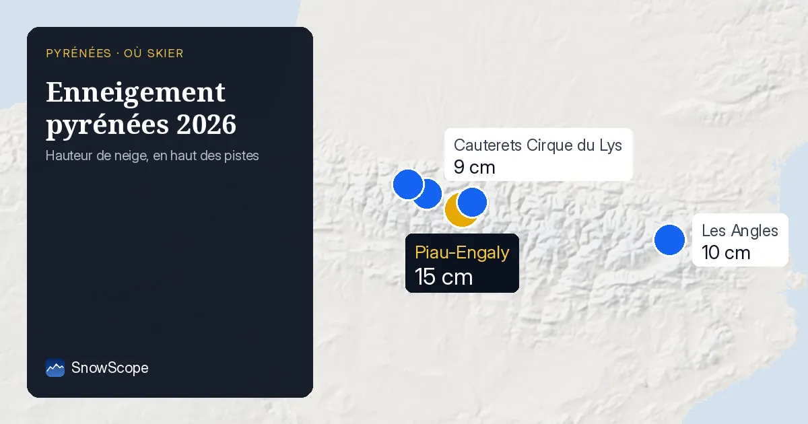
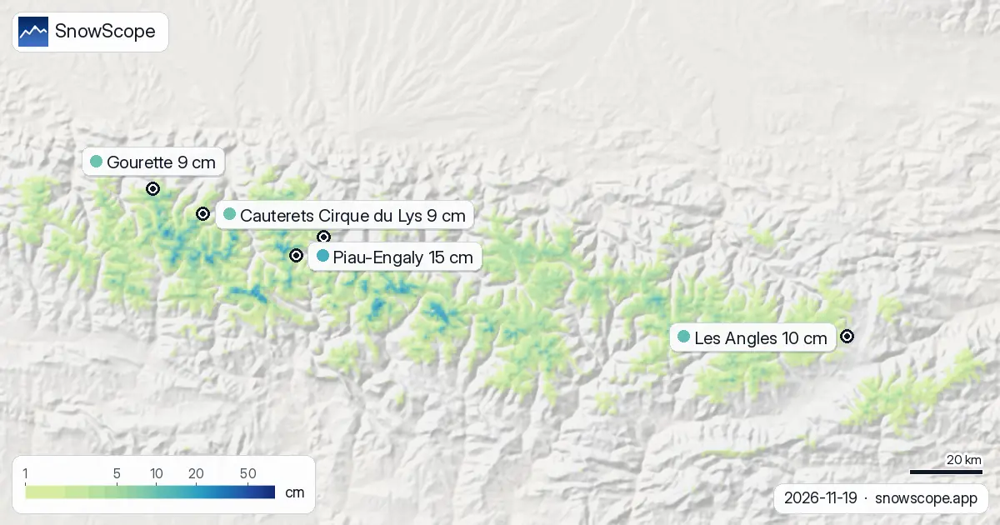
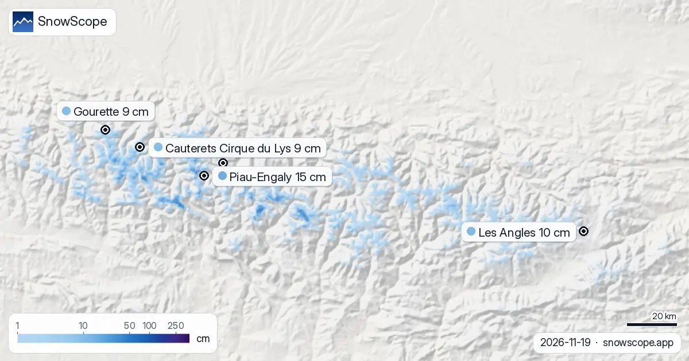

Enneigement pyrénées 2026: Le manteau neigeux des Pyrénées triple en deux jours ; Piau-Engaly en tête avec 15 cm
Enneigement pyrénées 2026 – Les Pyrénées connaissent un tournant net : le manteau neigeux a triplé en deux jours, passant de 560 à 1 710 km². Piau-Engaly affiche maintenant la plus grande épaisseur en altitude avec 15 cm, et d'autres chutes sont attendues ce weekend.
Consultez les prévisions neige en temps réel pour Piau-Engaly sur l'application SnowScopeHauteurs de neige, alertes poudreuse et carte 3D, gratuitement.
Le manteau neigeux s'étend rapidement
Entre le 17 et le 19 novembre, la surface enneigée dans les Pyrénées a augmenté de 560 à 1 710 km². C'est une multiplication par trois en deux jours. Le nombre de stations avec une neige mesurable a monté de 17 à 32 sur 53 dans la région. Cette expansion rapide montre comment les tempêtes poussent la neige depuis les plus hauts sommets et couvrent davantage de terrain.
| Station | Hauteur de neige | Neige fraîche, 72 h | Attendu, jours suivants | Sommet |
|---|---|---|---|---|
| Piau-Engaly | 15 cm | 13 cm | 17 cm | 2 527 m |
| Les Angles | 10 cm | 3 cm | 5 cm | 2 358 m |
| Cauterets Cirque du Lys | 9 cm | 8 cm | 22 cm | 2 420 m |
| Gourette | 9 cm | 8 cm | 20 cm | 2 453 m |
| Saint-Lary | 9 cm | 5 cm | 11 cm | 2 462 m |

Piau-Engaly en tête, mais la neige reste fine partout
Piau-Engaly affiche 15 cm sur ses pentes supérieures (à 2 527 m), devant Cauterets Cirque du Lys et Gourette, toutes deux à 9 cm. En altitude plus basse, le tableau est plus sombre : la base de Piau-Engaly à 1 762 m n'a pas encore de neige mesurable. Les données des stations confirment la finesse de la couche. Boí à 2 537 m (mesure du 18 novembre) n'avait que 4 cm. Núria à 1 971 m a enregistré 5 cm le même jour.
Même à mi-hauteur de Piau-Engaly (2 144 m), notre modèle indique zéro cm de neige aujourd'hui, bien que 11 cm soient prévus pour les sept prochains jours. Cela montre que la neige arrive par petites vagues et s'accumule surtout au-dessus de 2 000 m.

Risque de pluie et niveau de congélation cette semaine
Le niveau de congélation—l'altitude où les précipitations passent de la neige à la pluie—varie fortement. Aujourd'hui, il se situe entre 2 030 et 2 240 m dans la région. Le 21 novembre, il monte à 2 180–3 130 m à Piau-Engaly, ce qui signifie que la pluie tombera sur les pentes intermédiaires. Le 22 novembre, il redescend à 1 960 m. Cette alternance signifie que la neige tombant en pluie le 21 novembre à mi-hauteur redevient neige samedi.
Ce qui arrive : 22 cm supplémentaires à Cauterets d'ici samedi
Les modèles de prévision montrent des chutes de neige importantes pour le weekend. Cauterets Cirque du Lys devrait recevoir 22 cm sur les trois prochains jours, l'essentiel le 22 novembre. Piau-Engaly gagnera 17 cm, et Gourette 20 cm. Le 22 novembre, la surface enneigée estimée à l'échelle régionale devrait atteindre 3 160 km², près du double d'aujourd'hui. Les stations avec de la neige seront au nombre de 36 sur 53.
L'équivalent en eau a de l'importance ici : la neige de début de saison est légère et se tasse. Une couche de 15 cm contient moins d'eau qu'il n'y paraît, et les rochers et le sol nu restent visibles où les pentes font face au sud.
Risque avalancheux et contexte des stations
Le danger avalancheux est classé niveau 1 (faible) sur toutes les grandes stations aujourd'hui, le risque provenant surtout de plaques humides isolées sur les pentes exposées au réchauffement. Les données des stations du 18 novembre montrent de la neige fraîche sur tous les étages : 3 cm sont tombés à Vielha-Elipòrt (1 029 m), 5 cm à Núria (1 971 m) et 4 cm à Boí (2 537 m). Ces mesures valident nos estimations du modèle et montrent que la neige est tombée sur toute la région, pas seulement aux plus hauts sommets.
Conseils aux skieurs
- Skiez au-dessus de 2 000 m pour trouver la meilleure épaisseur de neige. Les pentes supérieures de Piau-Engaly et Cauterets en ont plus que le terrain plus bas.
- Consultez le bulletin avalancheux officiel de Météo-France avant de partir hors-piste, même avec le danger actuel faible ; la stabilité peut changer à mesure que la pluie tombe le 21 novembre.
- Attendez-vous à voir des rochers affleurer sur les pentes exposées au sud au-dessous de 2 100 m ; les pentes nord et les ravins retiendront mieux la neige.
- Surveillez la prévision pour samedi (22 novembre) : l'essentiel des nouvelles chutes est attendu ce jour-là. Vendredi peut apporter de la pluie sur les pentes intermédiaires en raison du niveau élevé de congélation.
- La neige de début de saison est fine et se tasse vite. Utilisez la mesure et la sonde en terrain peu connu pour vérifier l'épaisseur avant de vous engager sur des pentes raides.
À propos de ces chiffres
Les hauteurs de neige des stations sont la neige la plus épaisse sur le haut du domaine, d'après le modèle de neige SnowScope (environ 1 km, calcul du 18 novembre) ; ce sont des estimations pour une zone, pas une mesure en un point. Les valeurs des stations de mesure sont mesurées à la date indiquée. Les prévisions peuvent changer. Consultez toujours le bulletin d'avalanche officiel avant le hors-piste.
Bulletins d'avalanche officiels: Météo-France – Bulletin d'estimation du risque d'avalanche
Citer ce bulletin
Pour la recherche, l'enseignement ou la presse : chiffres et graphiques réutilisables librement sous CC BY 4.0 avec cette citation.
SnowScope (2026), Enneigement pyrénées 2026: Le manteau neigeux des Pyrénées triple en deux jours ; Piau-Engaly en tête avec 15 cm, https://snowscope.app/blog/fr/2026/11/pyrenees-piau-engaly-snow-depth-today-19-november-2026.html, consulté le 2026-11-19
SnowScope (Atlas Labs). (2026, November 19). Enneigement pyrénées 2026: Le manteau neigeux des Pyrénées triple en deux jours ; Piau-Engaly en tête avec 15 cm. SnowScope snow reports. https://snowscope.app/blog/fr/2026/11/pyrenees-piau-engaly-snow-depth-today-19-november-2026.html
BibTeX
@misc{snowscope2026pyreneespiauengalysnowde,
author = {{SnowScope (Atlas Labs)}},
title = {Enneigement pyrénées 2026: Le manteau neigeux des Pyrénées triple en deux jours ; Piau-Engaly en tête avec 15 cm},
year = {2026},
month = nov,
howpublished = {\url{https://snowscope.app/blog/fr/2026/11/pyrenees-piau-engaly-snow-depth-today-19-november-2026.html}},
note = {Published 2026-11-19 11:19 UTC; accessed 2026-11-19}
}· CC BY 4.0 · Méthodes, données et outils →
Piau-Engaly : neige et température selon l'altitude, cet hiver vs l'hiver dernier (outils) →
Suivre Piau-Engaly
Gratuit : un message quand la neige arrive, et la météo chaque matin.
Autres bulletins neige

Piau-Engaly domine la prévision avec 37 cm de neige fraîche d'ici le 13 novembre ; 24 cm sont attendus le 12 novembre.

Comparez Grandvalira et les stations espagnoles en décembre 2026 pour les hauteurs de neige, l'altitude des remontées et les prix à partir de 49,00 EUR.

Les cartes du jour regardent deux semaines devant dans les Pyrénées, du 13 novembre au 26 novembre. Elles viennent de les deux modèles mondiaux qui …